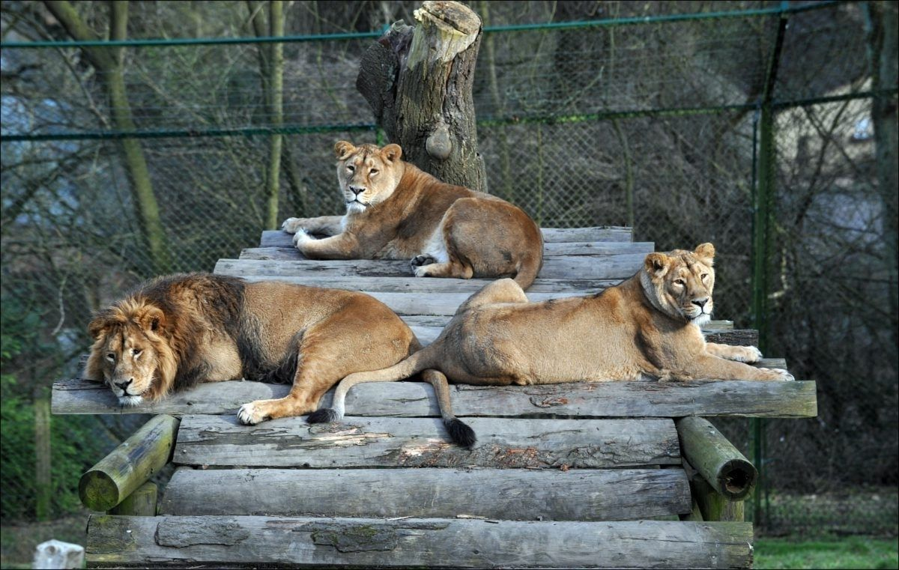

Xush Kelibsiz, Virtual Zooparkga!
Bu yerda siz turli hayvonlarni haqida qiziqarli malumotlar topishingiz mumkin.
Bizning hayvonlar
- Arlonlar - o'rmon qirollari
- Fillar - yer yuzidagi eng katta quruqlik hayvonlari
Hayvonlar haqida qiziaqarli faktlar


Hayvonlarni ko'rish
O'z fikringizni yozib qoldiring
Sevimli hayvoningiz qaysi
Hayvonlar haqida to'liq ma'lumotlar jadvali
| Hayvon |
Qiziqarli fakt |
| Arslon |
Arslonlar kunning 20 soatini uyqu bilan o'ktazishadi |
| Fil |
Fillar suvni o'zlarini burni bilan ichishadi |